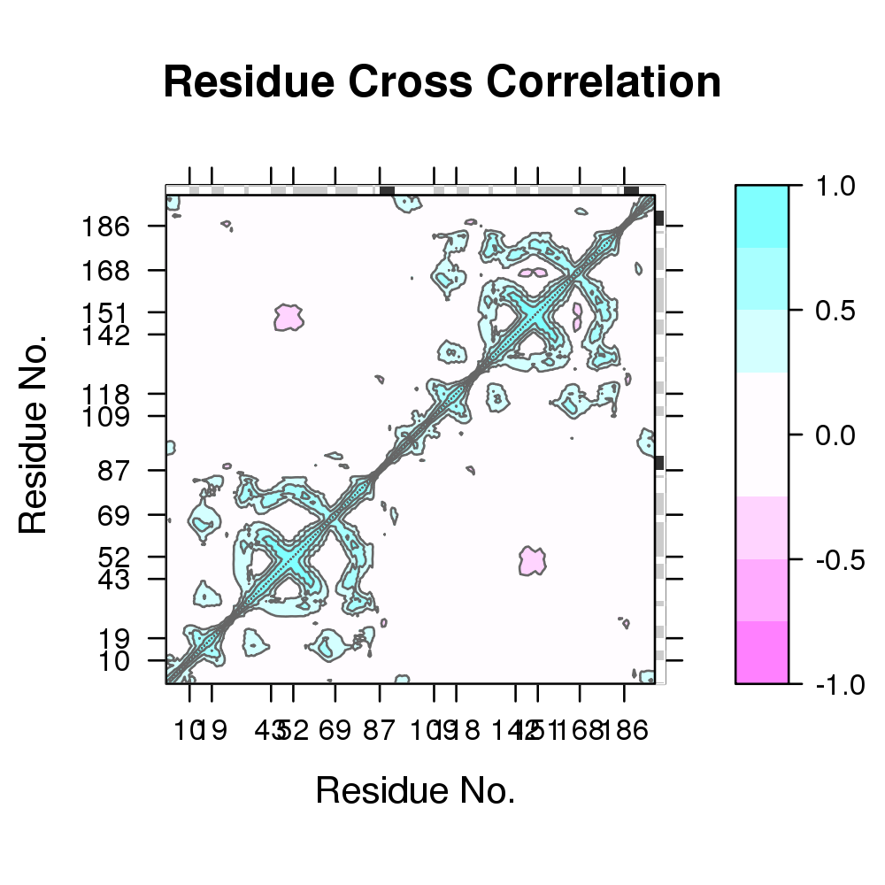
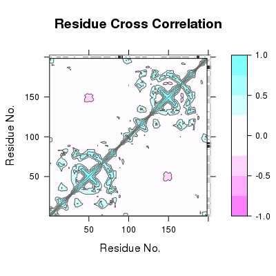

DCCM Plot
Usage
plot(x, sse = NULL, colorkey = TRUE, at = c(-1, -0.75, -0.5, -0.25, 0.25, 0.5, 0.75,
1), main = "Residue Cross Correlation", helix.col = "gray20", sheet.col = "gray80",
inner.box = TRUE, outer.box = FALSE, xlab = "Residue No.", ylab = "Residue No.",
...)
Arguments
- x
- a numeric matrix of atom-wise cross-correlations as output by the ‘dccm’ function.
- sse
- secondary structure object as returned from
dssporstride. - colorkey
- logical, if TRUE a key is plotted.
- at
- numeric vector specifying the levels to be colored.
- main
- a main title for the plot.
- helix.col
- The colors for rectangles representing alpha helices.
- sheet.col
- The colors for rectangles representing beta strands.
- inner.box
- logical, if TRUE an outer box is drawn.
- outer.box
- logical, if TRUE an outer box is drawn.
- xlab
- a label for the x axis.
- ylab
- a label for the y axis.
- ...
- additional graphical parameters for image.
Description
Plot a dynamical cross-correlation matrix.
Value
Called for its effect.
References
Grant, B.J. et al. (2006) Bioinformatics 22, 2695--2696.
Note
Be sure to check the correspondence of your ‘sse’ object with the ‘cij’ values being plotted as no internal checks are performed.
Examples
##-- Read example trajectory file trtfile <- system.file("examples/hivp.dcd", package="bio3d") trj <- read.dcd(trtfile)NATOM = 198 NFRAME= 351 ISTART= 0 last = 351 nstep = 351 nfile = 351 NSAVE = 1 NDEGF = 0 version 24 Reading (x100)...done## Read the starting PDB file to determine atom correspondence pdbfile <- system.file("examples/hivp.pdb", package="bio3d") pdb <- read.pdb(pdbfile) ## select residues 24 to 27 and 85 to 90 in both chains inds <- atom.select(pdb,"///24:27,85:90///CA/")Build selection from input string segid chain resno resid eleno elety Stest "" "" "24:27,85:90" "" "" "CA" Natom "198" "198" "20" "198" "198" "198" * Selected a total of: 20 intersecting atoms *## lsq fit of trj on pdb xyz <- fit.xyz(pdb$xyz, trj, fixed.inds=inds$xyz, mobile.inds=inds$xyz) cij <- dccm(xyz) plot.dccm(cij)
## SSE axis labs scopfile <- "http://scop.berkeley.edu/downloads/pdbstyle/pdbstyle-1.75/hh/d1hhpa_.ent" outfile = tempfile() download.file(scopfile, outfile) pdbaa <- read.pdb(outfile)HEADER SCOP/ASTRAL domain d1hhpa_ [26680] 02-JUN-09 0000sse <- dssp(pdbaa, resno=FALSE) ## set as homodimer sse <- lapply(sse, function(x) { if(!is.null(names(x))) lapply(x, rep, 2) else rep(x,2) }) sse <- lapply(sse, function(x) { if(length(grep("start", names(x)))>0) { i=length(x$start) x$start[(i/2+1):i] = x$start[(i/2+1):i]+ncol(cij)/2 x$end[(i/2+1):i] = x$end[(i/2+1):i]+ncol(cij)/2 return(x) } return (x) }) gridpoints <- c( sse$helix$start[sse$helix$length>4], sse$sheet$start[sse$sheet$length>4]) scales <- list(at=gridpoints, labels=gridpoints, alternating=1, ticks=F) plot.dccm(cij, sse=sse, scales=scales)
##add.grid(sse) ## Plot with changed colors plot.dccm(cij, col.regions=rev(heat.colors(12)))

See also
plot.bio3d, plot.dmat,
filled.contour, contour,
image plot.default, dssp,
stride